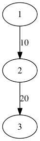
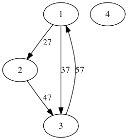
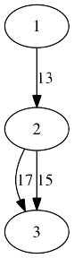

魔法少女サンレンジャーは、悪の組織から人々を守るために日々活動をしている。
彼女は敵を倒すときの決め技「テラ粒子レクイエムシュート」を持っていて、それは、両手でハート型を作りながらステッキを持ち、ステッキから攻撃を繰り出すというものである。
このステッキは内部で魔力をチャージし、発射するという仕組みになっている。
内部には、魔力を増幅できる複数の点と魔力を使い決め技を発射する1つの点がある。
さらに魔力を転送させるための装置があり、これらはそれぞれ2つの点を結び、すべての魔力をまとめて転送させることができる。
しかし、転送できる魔力の量が定まっており、その量を下回るか超えて転送しようとすると、ステッキが壊れてしまう。
最初、ある点に魔力を魔力量1で生成する。これ以降、新たに魔力を生成することはできない。
サンレンジャーは、発射点に魔力が転送される際に、できるだけ魔力量を大きくしたいと考えている。
魔力の転送はプログラムによって制御できる。
サンレンジャーに依頼されたあなたは、プログラムを書いて発射点に転送することが可能な魔力量の最大値を調べることにした。
番号1からNまでのN個の点とM個の転送装置がある。
最初、魔力量が1である魔力が点1に存在する。最終的にできるだけ多くの魔力を点Nに到達させたい。
1からN-1までの点ではその時点で持っている魔力量に1以上の任意の魔力量を加算することができる。
また、i番目の転送装置は点aiから点biまで、魔力をまとめて移動させることができる。（このとき別々の伝送装置に魔力が分散して転送されることはない）
ただし、この転送装置を使うためには、持っている魔力量がちょうどciでなければならない。
魔力が点Nへ到達したときの魔力量の最大値を出力せよ。もし、点Nへ到達できない場合は、-1を出力せよ。
入力は以下の形式で与えられる。
N M a1 b1 c1 a2 b2 c2 … aM bM cM
1行目には、2つの整数N, Mが空白区切りで与えられる。
2行目からM+1行目のそれぞれの行iには、3つの整数ai, bi, ciが空白区切りで与えられる。
入力は以下の条件を満たす。
点Nへ到達できる場合は、その最大の魔力量を1行に出力する。到達できない場合は、代わりに-1を出力する。
3 2 1 2 10 2 3 20
20

まず、点1で魔力量を10まで上げ、点2へ魔力を転送させる。
次に、点2で魔力量を20まで上げ、点3へ魔力を転送させる。
以上より、点3に魔力量20で転送させることができる。
4 4 1 2 27 1 3 37 2 3 47 3 1 57

点4への転送装置がないため、点4へ魔力を転送させることができない。
-1
3 3 1 2 13 2 3 17 2 3 15
17

まず、点1で魔力量を13まで上げ、点2へ魔力を転送させる。
次に、点2からの転送装置には、点3へ魔力量17で転送できるものと魔力量15で転送できるものがあるので、魔力量を17まで上げて転送させる。
以上より、点3に魔力量17で転送させることができる。